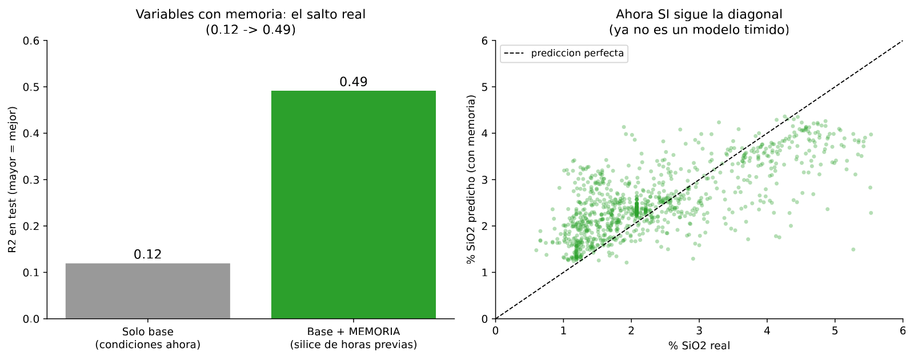
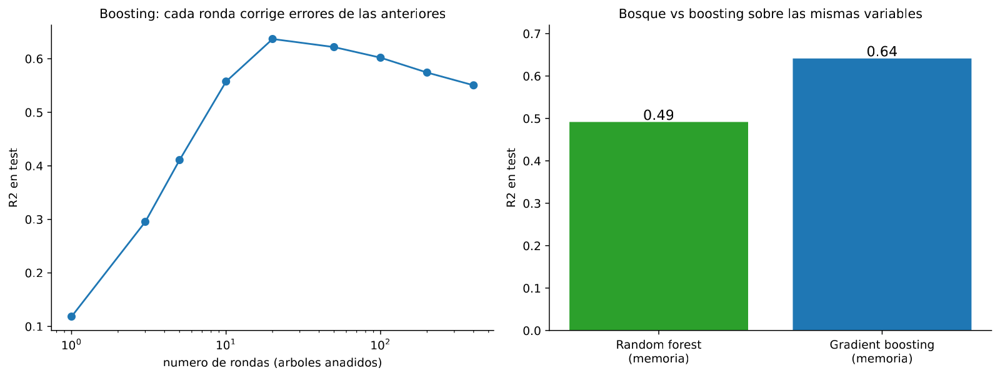

In 30 seconds
- R² 0.64. The best number in the project, after months stuck at 0.04.
- A better model did not get it, better variables did. With the same process columns the R² is 0.119. Adding memory of the past lifts it to 0.492.
- Boosting finishes the job, from 0.492 to 0.641, training trees in a chain.
- The variable that weighs most is the previous hour's silica. And it is legal: the laboratory already reported it.
- An uncomfortable question remains there. If that column does almost all the work, what it scores on its own is still unknown. Module 7 measures it.
What this module solves
The four previous modules tried ever more capable algorithms against the same ceiling of R² 0.04. None moved it.
This module changes strategy. Instead of looking for a better model, it builds better variables. The idea is that the process has inertia, and no column in the file was capturing it.
The jump is large and deserves careful celebration, because module 7 is going to look at that number from another angle.
Before the theory: a toy example
Six consecutive hours of a plant drifting upwards.
| Hour | % SiO₂ |
|---|---|
| 1 | 1 |
| 2 | 2 |
| 3 | 3 |
| 4 | 4 |
| 5 | 5 |
| 6 | 6 |
Hours 2 to 6 are going to be predicted, because hour 1 has no past.
Step 1. Always predict the mean
The mean of the six hours is 3.5.
mean = (1 + 2 + 3 + 4 + 5 + 6) / 6 = 21 / 6 = 3.5The misses over hours 2 to 6:
actual: 2 3 4 5 6
predicted: 3.5 3.5 3.5 3.5 3.5
miss: −1.5 −0.5 +0.5 +1.5 +2.5mean squared error = (2.25 + 0.25 + 0.25 + 2.25 + 6.25) / 5 = 11.25 / 5 = 2.25
RMSE = root of 2.25 = 1.5Step 2. Predict the same as the previous hour
No model, nothing trained. The prediction for each hour is the value of the hour before.
actual: 2 3 4 5 6
predicted: 1 2 3 4 5
miss: +1 +1 +1 +1 +1mean squared error = (1 + 1 + 1 + 1 + 1) / 5 = 5 / 5 = 1
RMSE = root of 1 = 1RMSE 1.5 against 1.0. Repeating the previous hour is a third better than the mean, and it needs no model at all.
Step 3. Why that is legal
The obvious question is whether this is a leak. It is not, and the reason is in module 1.
To predict the silica of hour 6, the prediction instant is the start of hour 6. At that moment the laboratory has already reported hour 5. The value exists, it is on the left of the line.
The silica of hour 6 does not exist yet. That is precisely the value to predict.
Step 4. Turn it into a column
Instead of using the previous hour as the prediction, it can be fed in as an input column and the model left to combine it with the rest.
| Hour | pH | Air | Previous hour's SiO₂ | SiO₂ (target) |
|---|---|---|---|---|
| 2 | 9.5 | 300 | 1 | 2 |
| 3 | 9.6 | 305 | 2 | 3 |
| 4 | 9.4 | 298 | 3 | 4 |
That new column is called a lag. The model no longer starts from zero: it starts knowing where the process was an hour ago.
Step 5. What just happened, and what is left pending
Information has just been created without adding a single sensor. It was in the file, in the target column, and nobody had put it where the model could see it.
But step 2 leaves a thorn. Repeating the previous hour already gave RMSE 1.0 with no model at all. When the model with lags gives a good number, we will have to ask how much of that number is its own merit and how much belongs to the lag column. This module does not answer that. Module 7 does.
Glossary
9 terms, in plain words
- Lag. A column with the value of a variable at an earlier instant. In Spanish, retardo.
- Rolling mean. The average of the last few hours, recomputed at every row. It smooths the noise and captures the trend.
- Feature engineering. Building new columns from the ones there are. In Spanish, ingeniería de variables.
- Hourly resampling. Grouping the 180 rows of each hour into a single one, with the average. It puts the data at the laboratory's pace.
- Process inertia. The state now depending on the state a while ago. A flotation cell does not change all at once.
- Boosting. Training trees in a chain, each one devoted to correcting the previous one's error. In Spanish, refuerzo.
- Round. Each tree added to the boosting chain.
- Early stopping. Stopping the addition of trees when the validation error stops dropping. In Spanish, parada temprana.
- Persistence. Predicting that the next value will equal the last one measured. The baseline that appears in step 2.
Step by step
Step 1. Put the data at the laboratory's pace
The 737,453 rows run at 20 seconds, and the target is measured about 14 times an hour. Modelling at 20 seconds adds noise without adding information.
They are grouped by hour with the average. That leaves 4,091 usable hours.
Step 2. Build the memory
Four new columns, all from the target's past:
- the silica of one hour ago,
- the one of two hours ago,
- the one of three hours ago,
- the average of the previous three.
All of them obey the rule of module 1. They already exist at the instant of predicting.
Step 3. Measure the contribution separately
First a model with the process columns alone. Then the same model with process plus memory. The difference between the two is the contribution of the memory, isolated.
Step 4. Change model, now that there is signal
With real signal, a more capable model can make use of it. Boosting trains trees in a chain: the first predicts, the second corrects what the first got wrong, and so on.
Step 5. Watch when to stop
Adding rounds improves up to a point and then worsens. It is the overfitting of module 2, with another knob.
The code, in parts
Step 1. Group by hour and create the lags
h = df.set_index("date").sort_index().resample("h").mean()
h["sil_lag1"] = h[TARGET].shift(1)
h["sil_lag2"] = h[TARGET].shift(2)
h["sil_roll3"] = h[TARGET].shift(1).rolling(3).mean()
print("Filas horarias usables:", len(h.dropna()))line by line, 5 entries
.set_index("date")- Makes the date the index, so the data can be grouped by time.
.resample("h").mean()- Groups into one-hour stretches and averages. The hours of the gap stay empty.
.shift(1)- Shifts the column one row down. The row of hour 6 receives the value of hour 5.
.shift(1).rolling(3).mean()- First shift and then average three. The order matters: averaging without shifting would include the current hour, and that would be a leak.
.dropna()- Removes the rows without a value, which here are the first hours and those of the gap.
Filas horarias usables: 4091
Solo base : R2 +0.119 RMSE 1.065
Base + memoria (lags): R2 +0.492 RMSE 0.809From 0.119 to 0.492 with the same process columns. Four built columns, not one new sensor.

Step 2. Swap the forest for boosting
from sklearn.ensemble import HistGradientBoostingRegressor
modelo = HistGradientBoostingRegressor(early_stopping=True, validation_fraction=0.15,
n_iter_no_change=15, random_state=0)
modelo.fit(train[base + mem], train[TARGET])line by line, 4 entries
HistGradientBoostingRegressor- Fast boosting, which bins the values before looking for splits.
early_stopping=True- Stops adding trees on its own, when they stop helping.
validation_fraction=0.15- Sets aside 15% of the training set to watch when to stop. It does not touch the test.
n_iter_no_change=15- Puts up with 15 rounds without improvement before stopping, in case the improvement returns.
R2 forest 0.492 | R2 boosting 0.641
R2 por rondas: [0.118, 0.295, 0.411, 0.558, 0.637, 0.622, 0.602, 0.574, 0.55]
The list of rounds is overfitting again. It rises to 0.637 and then falls to 0.55. Adding trees without control worsens things, just as deepening without control did in module 2.
The result, measured
What we expected. That the variables with memory would help somewhat, perhaps lifting the R² from 0.04 to 0.15 or 0.20.
What came out. Far more than that.
| Model | Test R² |
|---|---|
| Everything in module 2, at 20 seconds | 0.04 |
| Hourly forest, process columns only | 0.119 |
| Hourly forest, process plus memory | 0.492 |
| Boosting, process plus memory | 0.641 |
What it means. That the ceiling of module 2 did not belong to the whole problem. It belonged to the problem as it was posed, without memory and at 20 seconds.
And the order of the factors matters. The big jump, from 0.119 to 0.492, came from the variables. The jump from 0.492 to 0.641 came from the model. The variables contributed twice what the algorithm did.
That is the most transferable lesson of the module. When a project gets stuck, feature engineering usually pays more than trying new models.
The thorn from the toy example
In step 2 of the example, repeating the previous hour gave RMSE 1.0 against 1.5 for the mean. Without a model.
In the real file that same column, sil_lag1, correlates +0.816 with the target. It is by far the strongest column in the whole project, and it is not a sensor: it is the target itself shifted by one hour.
So the 0.641 opens a question this module leaves deliberately unanswered: what that column scores on its own, with no model. Module 7 measures it, and the answer changes how this 0.641 has to be read.
What this module leaves open
There is a second pending matter. All of this has been measured at a one-hour horizon, which is the easiest one.
A plant that needs to react wants to know further ahead. Module 8 repeats the measurement at 1, 3, 6 and 12 hours.
Watch out
- The order of
shiftandrollingis not indifferent. Averaging the last three hours including the current one is a leak. First shift, then average. - A lag of the target is legal, but only if it respects the prediction instant. With a one-hour horizon, the one-hour lag is valid. With a three-hour horizon, it no longer is.
- Resampling to the target's cadence removes noise. Modelling at 20 seconds a target measured 14 times an hour asks the model to explain variation that does not exist.
- Boosting overfits too. Here it peaks at 0.637 and falls to 0.55 with more rounds. Early stopping is not decoration.
- A big jump in R² calls for checking the baseline, not celebrating. If the new variable is the target itself shifted, the right rival is no longer the mean.
- Beware of believing the model learned the process. It may have learned only that the process changes slowly.
Metallurgical bridge
The model's memory is the inertia of the cell. A flotation column has a volume of pulp and a residence time. If an hour ago the concentrate grade was high, part of that load is still inside the cell. The process does not jump, it shifts.
The lag of the target is the last shift assay pinned on the board. No operator starts a shift assuming the plant is at its historical average. He starts by looking at the last laboratory result and adjusting from there.
And the module's warning has its plant version. If a model predicts the grade well only because it knows the grade of an hour ago, it is doing the same as the operator without adding anything on top. What gets paid for in a control room is not repeating the last assay. It is anticipating the change before it shows up.
Review
Why is using the previous hour's silica not data leakage?
Because it already exists at the instant of predicting. The rule of module 1 says an input is legitimate if it is available when the answer is due.
To predict hour 6 the prediction instant is the start of that hour, and the laboratory has already reported hour 5. That value is on the table. The silica of hour 6 is not, and that is the value to predict. The leak would be using the analysis of hour 6 itself. Or the iron in the concentrate, which arrives later.
The variables lifted the R² from 0.119 to 0.492 and the model from 0.492 to 0.641. What do you learn?
That the variables paid twice what the algorithm did, and that is the usual thing.
Modules 2, 3 and 4 tried trees, forests, lines and regularisation against a ceiling of 0.04. None moved it. Four columns built by hand moved it at once. When a project gets stuck, the productive question is usually not which model to try, but which information is not reaching the model.
Boosting reaches 0.637 at round 5 and falls to 0.55 afterwards. What is going on?
Overfitting, the same as in module 2 with another knob.
Each round adds a tree devoted to correcting the errors that remained. At first those errors are real signal. Past a certain point, what remains is noise, and the new trees set about memorising it. The training error keeps dropping and the test error starts rising. Early stopping exists for exactly this: it sets aside a piece of the training set, watches the error on it and cuts off when it stops improving.
This module achieves R² 0.64. Can you claim that ML solves the problem?
Not yet, and for a concrete reason. The model's most important variable is the target itself shifted by one hour, which correlates +0.816 with it.
Before crediting the model, what that column scores alone, with no model at all, has to be measured. It is the persistence baseline, and the toy example already warned that it is strong: RMSE 1.0 against 1.5 for the mean. Module 7 makes that measurement on the real data, and the result forces a rereading of this 0.641.
What should be tried next to raise the ceiling further?
Three paths, in order of cost.
The first is more feature engineering: lags of the process columns, not only of the target, and rolling means over different windows. The second is models that treat the sequence as a sequence, instead of treating each hour as a lone row. The third is obtaining data that do not exist today, above all records of setpoints and of changes in operation. Module 11 walks the second path with sequence networks.